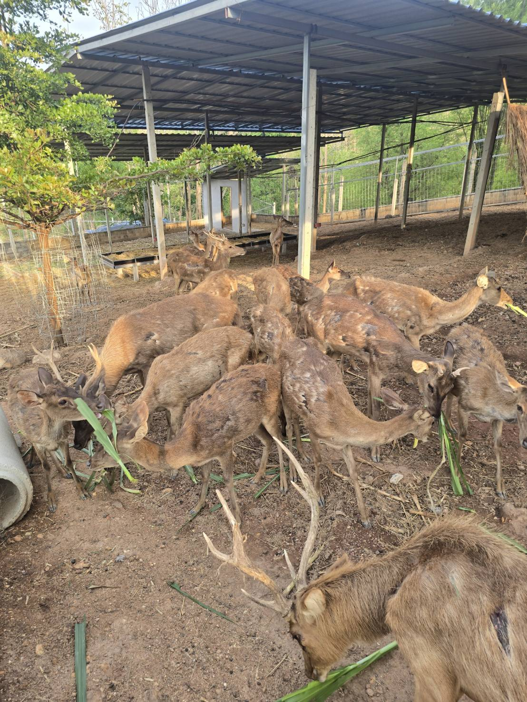
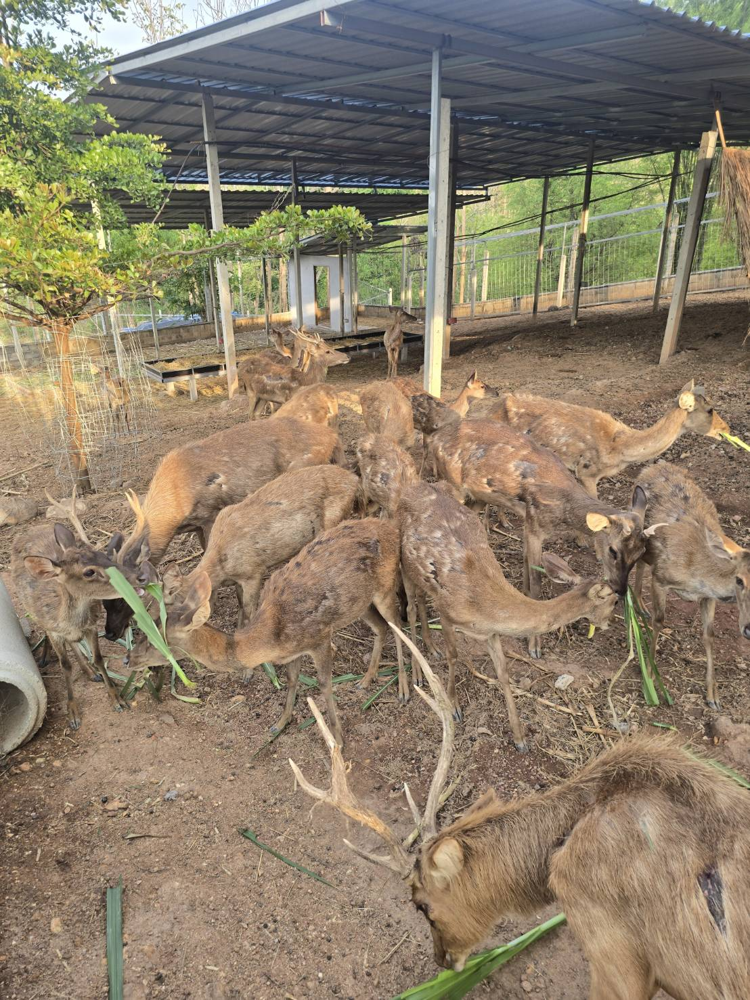

กฎความปลอดภัย
- ควรเข้าหากวางอย่างช้าๆ และใจเย็นเสมอ
- วางมือให้แบนราบเมื่อเสนออาหาร
- ไม่มีการเคลื่อนไหวฉับพลันหรือเสียงดัง
- เด็กจะต้องได้รับการดูแลตลอดเวลา
- ปฏิบัติตามคำแนะนำของเจ้าหน้าที่ทุกครั้ง
ขั้นตอนกิจกรรม
- รับอาหารกวางจากจุดบริการ
- เดินเข้าโซนให้อาหารพร้อมเจ้าหน้าที่แนะนำ
- ยื่นอาหารให้กวางโดยวางบนฝ่ามือและยื่นให้เบา ๆ
- ถ่ายรูปได้แต่ควรอยู่ในระยะปลอดภัย
- เมื่อเสร็จแล้วให้นำภาชนะคืนจุดบริการ